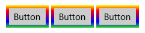
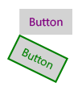
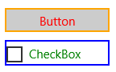
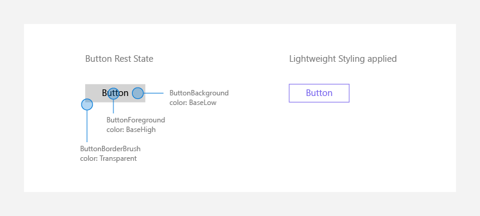
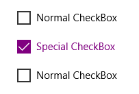

XAML styles
You can customize the appearance of your apps in many ways by using the XAML framework. Styles let you set control properties and reuse those settings for a consistent appearance across multiple controls.
WinUI and styles
Starting with WinUI 2.2, we have used WinUI to deliver new visual style updates across our UI components. If you notice your UI is not updating to the latest styles, be sure to update to the latest WinUI NuGet package.
Starting with WinUI 2.6, we provide new styles for most of the controls, and a new versioning system that let's you revert to the previous control styles if needed. We encourage you to use the new styles, as they better match the design direction of Windows. However, if your scenario cannot support the new styles, the previous versions are still available.
You can change the style version by setting the ControlsResourcesVersion property on the XamlControlsResources that you include in your Application.Resources when you use WinUI version 2. ControlsResourcesVersion defaults to the enum value Version2.
Setting this value to Version1 causes XamlControlsResources to load the previous style versions instead of the new styles used by the latest WinUI version. Changing this property at runtime is not supported and VisualStudio's hot reload functionality will not work; however, after you rebuild your application you will see the control styles change.
<Application.Resources>
<XamlControlsResources xmlns="using:Microsoft.UI.Xaml.Controls"
ControlsResourcesVersion="Version1"/>
</Application.Resources>
Style basics
Use styles to extract visual property settings into reusable resources. Here's an example that shows 3 buttons with a style that sets the BorderBrush, BorderThickness and Foreground properties. By applying a style, you can make the controls appear the same without having to set these properties on each control separately.

You can define a style inline in the XAML for a control, or as a reusable resource. Define resources in an individual page's XAML file, in the App.xaml file, or in a separate resource dictionary XAML file. A resource dictionary XAML file can be shared across apps, and more than one resource dictionary can be merged in a single app. Where the resource is defined determines the scope in which it can be used. Page-level resources are available only in the page where they are defined. If resources with the same key are defined in both App.xaml and in a page, the resource in the page overrides the resource in App.xaml. If a resource is defined in a separate resource dictionary file, its scope is determined by where the resource dictionary is referenced.
In the Style definition, you need a TargetType attribute and a collection of one or more Setter elements. The TargetType attribute is a string that specifies a FrameworkElement type to apply the style to. The TargetType value must specify a FrameworkElement-derived type that's defined by the Windows Runtime or a custom type that's available in a referenced assembly. If you try to apply a style to a control and the control's type doesn't match the TargetType attribute of the style you're trying to apply, an exception occurs.
Each Setter element requires a Property and a Value. These property settings indicate what control property the setting applies to, and the value to set for that property. You can set the Setter.Value with either attribute or property element syntax. The XAML here shows the style applied to the buttons shown previously. In this XAML, the first two Setter elements use attribute syntax, but the last Setter, for the BorderBrush property, uses property element syntax. The example doesn't use the x:Key attribute attribute, so the style is implicitly applied to the buttons. Applying styles implicitly or explicitly is explained in the next section.
<Page.Resources>
<Style TargetType="Button">
<Setter Property="BorderThickness" Value="5" />
<Setter Property="Foreground" Value="Black" />
<Setter Property="BorderBrush" >
<Setter.Value>
<LinearGradientBrush StartPoint="0.5,0" EndPoint="0.5,1">
<GradientStop Color="Yellow" Offset="0.0" />
<GradientStop Color="Red" Offset="0.25" />
<GradientStop Color="Blue" Offset="0.75" />
<GradientStop Color="LimeGreen" Offset="1.0" />
</LinearGradientBrush>
</Setter.Value>
</Setter>
</Style>
</Page.Resources>
<StackPanel Orientation="Horizontal">
<Button Content="Button"/>
<Button Content="Button"/>
<Button Content="Button"/>
</StackPanel>
Apply an implicit or explicit style
If you define a style as a resource, there are two ways to apply it to your controls:
- Implicitly, by specifying only a TargetType for the Style.
- Explicitly, by specifying a TargetType and an x:Key attribute attribute for the Style and then by setting the target control's Style property with a {StaticResource} markup extension reference that uses the explicit key.
If a style contains the x:Key attribute, you can only apply it to a control by setting the Style property of the control to the keyed style. In contrast, a style without an x:Key attribute is automatically applied to every control of its target type, that doesn't otherwise have an explicit style setting.
Here are two buttons that demonstrate implicit and explicit styles.

In this example, the first style has an x:Key attribute and its target type is Button. The first button's Style property is set to this key, so this style is applied explicitly. The second style is applied implicitly to the second button because its target type is Button and the style doesn't have an x:Key attribute.
<Page.Resources>
<Style x:Key="PurpleStyle" TargetType="Button">
<Setter Property="FontFamily" Value="Segoe UI"/>
<Setter Property="FontSize" Value="14"/>
<Setter Property="Foreground" Value="Purple"/>
</Style>
<Style TargetType="Button">
<Setter Property="FontFamily" Value="Segoe UI"/>
<Setter Property="FontSize" Value="14"/>
<Setter Property="RenderTransform">
<Setter.Value>
<RotateTransform Angle="25"/>
</Setter.Value>
</Setter>
<Setter Property="BorderBrush" Value="Green"/>
<Setter Property="BorderThickness" Value="2"/>
<Setter Property="Foreground" Value="Green"/>
</Style>
</Page.Resources>
<Grid x:Name="LayoutRoot">
<Button Content="Button" Style="{StaticResource PurpleStyle}"/>
<Button Content="Button"/>
</Grid>
Use based-on styles
To make styles easier to maintain and to optimize style reuse, you can create styles that inherit from other styles. You use the BasedOn property to create inherited styles. Styles that inherit from other styles must target the same type of control or a control that derives from the type targeted by the base style. For example, if a base style targets ContentControl, styles that are based on this style can target ContentControl or types that derive from ContentControl such as Button and ScrollViewer. If a value is not set in the based-on style, it's inherited from the base style. To change a value from the base style, the based-on style overrides that value. The next example shows a Button and a CheckBox with styles that inherit from the same base style.

The base style targets ContentControl, and sets the Height, and Width properties. The styles based on this style target CheckBox and Button, which derive from ContentControl. The based-on styles set different colors for the BorderBrush and Foreground properties. (You don't typically put a border around a CheckBox. We do it here to show the effects of the style.)
<Page.Resources>
<Style x:Key="BasicStyle" TargetType="ContentControl">
<Setter Property="Width" Value="130" />
<Setter Property="Height" Value="30" />
</Style>
<Style x:Key="ButtonStyle" TargetType="Button"
BasedOn="{StaticResource BasicStyle}">
<Setter Property="BorderBrush" Value="Orange" />
<Setter Property="BorderThickness" Value="2" />
<Setter Property="Foreground" Value="Red" />
</Style>
<Style x:Key="CheckBoxStyle" TargetType="CheckBox"
BasedOn="{StaticResource BasicStyle}">
<Setter Property="BorderBrush" Value="Blue" />
<Setter Property="BorderThickness" Value="2" />
<Setter Property="Foreground" Value="Green" />
</Style>
</Page.Resources>
<StackPanel>
<Button Content="Button" Style="{StaticResource ButtonStyle}" Margin="0,10"/>
<CheckBox Content="CheckBox" Style="{StaticResource CheckBoxStyle}"/>
</StackPanel>
Use tools to work with styles easily
A fast way to apply styles to your controls is to right-click on a control on the Microsoft Visual Studio XAML design surface and select Edit Style or Edit Template (depending on the control you are right-clicking on). You can then apply an existing style by selecting Apply Resource or define a new style by selecting Create Empty. If you create an empty style, you are given the option to define it in the page, in the App.xaml file, or in a separate resource dictionary.
Lightweight styling
Overriding the system brushes is generally done at the App or Page level, and in either case the color override will affect all controls that reference that brush – and in XAML many controls can reference the same system brush.

<Page.Resources>
<ResourceDictionary>
<ResourceDictionary.ThemeDictionaries>
<ResourceDictionary x:Key="Light">
<SolidColorBrush x:Key="ButtonBackground" Color="Transparent"/>
<SolidColorBrush x:Key="ButtonForeground" Color="MediumSlateBlue"/>
<SolidColorBrush x:Key="ButtonBorderBrush" Color="MediumSlateBlue"/>
</ResourceDictionary>
</ResourceDictionary.ThemeDictionaries>
</ResourceDictionary>
</Page.Resources>
For states like PointerOver (mouse is hovered over the button), PointerPressed (button has been invoked), or Disabled (button is not interactable). These endings are appended onto the original Lightweight styling names: ButtonBackgroundPointerOver, ButtonForegroundPressed, ButtonBorderBrushDisabled, etc. Modifying those brushes as well, will make sure that your controls are colored consistently to your app's theme.
Placing these brush overrides at the App.Resources level, will alter all the buttons within the entire app, instead of on a single page.
Per-control styling
In other cases, changing a single control on one page only to look a certain way, without altering any other versions of that control, is desired:

<CheckBox Content="Normal CheckBox" Margin="5"/>
<CheckBox Content="Special CheckBox" Margin="5">
<CheckBox.Resources>
<ResourceDictionary>
<ResourceDictionary.ThemeDictionaries>
<ResourceDictionary x:Key="Light">
<SolidColorBrush x:Key="CheckBoxForegroundUnchecked"
Color="Purple"/>
<SolidColorBrush x:Key="CheckBoxForegroundChecked"
Color="Purple"/>
<SolidColorBrush x:Key="CheckBoxCheckGlyphForegroundChecked"
Color="White"/>
<SolidColorBrush x:Key="CheckBoxCheckBackgroundStrokeChecked"
Color="Purple"/>
<SolidColorBrush x:Key="CheckBoxCheckBackgroundFillChecked"
Color="Purple"/>
</ResourceDictionary>
</ResourceDictionary.ThemeDictionaries>
</ResourceDictionary>
</CheckBox.Resources>
</CheckBox>
<CheckBox Content="Normal CheckBox" Margin="5"/>
This would only effect that one "Special CheckBox" on the page where that control existed.
Custom controls
When you are building your own custom controls that may be visually and/or functionally aligned with our built-in controls, consider using implicit styling and Lightweight styling resources to define your custom content. You can either use the resources directly, or create a new alias for the resource.
Using control resources directly
For example, if you are writing a control that looks like a Button, you can have your control reference the button resources directly, like this:
<Style TargetType="local:MyCustomControl">
<Setter Property="Background" Value="{ThemeResource ButtonBackground}" />
<Setter Property="BorderBrush" Value="{ThemeResource ButtonBorderBrush}" />
</Style>
Aliasing control resources to new names
Alternatively, if you prefer to make your own resources, you should alias those custom names to our default Lightweight styling resources.
For example, your custom control's style might have special resource definitions:
<Style TargetType="local:MyCustomControl">
<Setter Property="Background" Value="{ThemeResource MyCustomControlBackground}" />
<Setter Property="BorderBrush" Value="{ThemeResource MyCustomControlBorderBrush}"/>
</Style>
In your Resource Dictionary or main definition, you would hook up the Lightweight styling resources to your custom ones:
<ResourceDictionary.ThemeDictionaries>
<ResourceDictionary x:Key="Default">
<StaticResource x:Key="MyCustomControlBackground" ResourceKey="ButtonBackground" />
<StaticResource x:Key="MyCustomControlBorderBrush" ResourceKey="ButtonBorderBrush" />
</ResourceDictionary>
<ResourceDictionary x:Key="Light">
<StaticResource x:Key="MyCustomControlBackground" ResourceKey="ButtonBackground" />
<StaticResource x:Key="MyCustomControlBorderBrush" ResourceKey="ButtonBorderBrush" />
</ResourceDictionary>
<ResourceDictionary x:Key="HighContrast">
<StaticResource x:Key="MyCustomControlBackground" ResourceKey="ButtonBackground" />
<StaticResource x:Key="MyCustomControlBorderBrush" ResourceKey="ButtonBorderBrush" />
</ResourceDictionary>
</ResourceDictionary.ThemeDictionaries>
Its required that you use a ThemeDictionary that is duplicated three times in order to handle the three different theme changes properly (Default, Light, HighContrast).
Caution
If you assign a Lightweight styling resource to a new alias, and also redefine the Lightweight styling resource, your customization might not be applied if the resource lookup is not in the correct order. For example, if you override ButtonBackground in a spot that is searched before MyCustomControlBackground is found, the override would be missed.
Avoid restyling controls
The WinUI 2.2 or later includes new styles and templates for both WinUI and system controls.
The best way to stay current with our latest visual styles is to use the latest WinUI 2 package and avoid custom styles and templates (also known as re-templating). Styles are still a convenient way to apply a set of values consistently across controls in your app. When doing this, make sure to be based on our latest styles.
For system controls that use WinUI styles (Windows.UI.Xaml.Controls namespace), set BasedOn="{StaticResource Default<ControlName>Style}", where <ControlName> is the name of the control. For example:
<Style TargetType="TextBox" BasedOn="{StaticResource DefaultTextBoxStyle}">
<Setter Property="Foreground" Value="Blue"/>
</Style>
For WinUI 2 controls (Microsoft.UI.Xaml.Controls namespace), the default style is defined in the metadata, so omit BasedOn.
Derived controls
If you derive a custom control from an existing XAML control, it will not get the WinUI 2 styles by default. To apply the WinUI 2 styles:
- Create a new Style with its TargetType set to your custom control.
- Base the Style on the default style of the control you derived from.
One common scenario for this is to derive a new control from ContentDialog. This example shows how to create a new Style that applies DefaultContentDialogStyle to your custom dialog.
<ContentDialog
x:Class="ExampleApp.SignInContentDialog"
... >
<ContentDialog.Resources>
<Style TargetType="local:SignInContentDialog" BasedOn="{StaticResource DefaultContentDialogStyle}"/>
...
</ContentDialog.Resources>
<!-- CONTENT -->
</ContentDialog>
The template property
A style setter can be used for the Template property of a Control, and in fact this makes up the majority of a typical XAML style and an app's XAML resources. This is discussed in more detail in the topic Control templates.